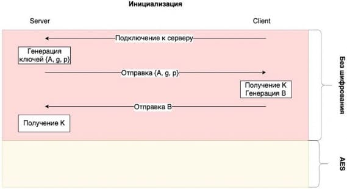
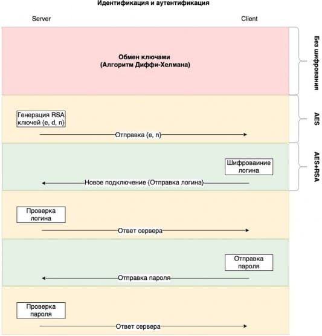
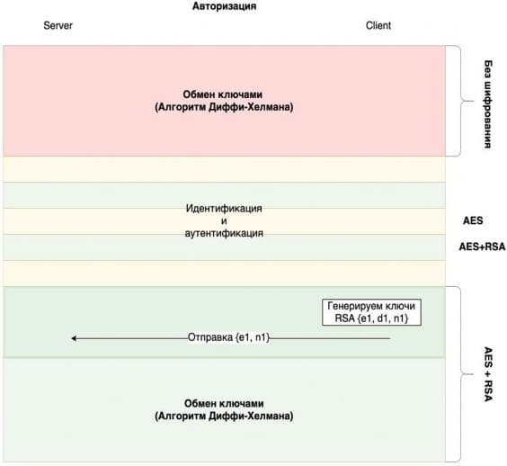
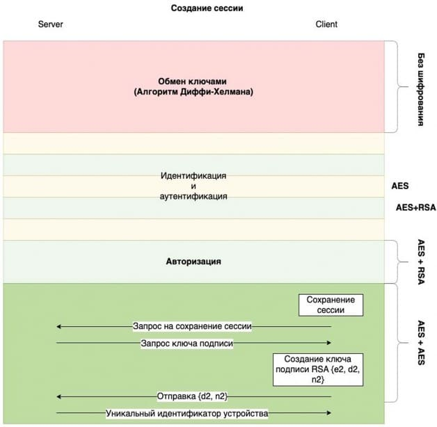
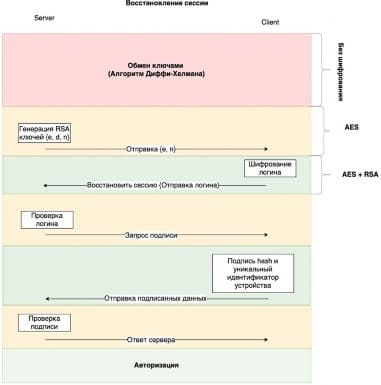
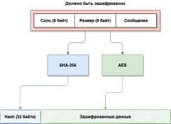

УДК 004.057.4
Данильчук К. М., Моргунов А. Г., Чернышова А. В.
ГОУ ВПО «Донецкий национальный технический университет» (г. Донецк) kirill.danilchuk01@mail.ru mag17122000@mail.ru chernyshova.alla@rambler.ru
В настоящее время очень актуальным является программное обеспечение для агрегации сообщений. Одной из задач современных агрегаторов является установление безопасного соединения и использование криптографических средств для защиты передаваемых данных между сервером и клиентом. Рассмотрим существующие протоколы для безопасной передачи данных, которые используются в клиент-серверном программном обеспечении.
SSL – разработан компанией Netscape Communications.Это криптографический протокол, который был опубликован в 1995 году. Во время аутентификации используются ассиметричные криптографические алгоритмы, а для обмена информацией – симметричные. В 2015 году признан устаревшим [1].
TLS – развитием стандарта занимается IETF. TLS основан на спецификации протокола SSL 3.0, из-за чего имеет схожие подходы. Является намного более безопасным протоколом по сравнению с SSL. Обеспечена защита от многих криптографических атак [2].
Tox – протокол, который обеспечивает децентрализованный обмен сообщениями, а также осуществление аудио- и видеосвязи, в интернете с использованием ассиметричного шифрования. Основной особенностью является то, что при использовании протокола идентификатор пользователя создается локально, что позволяет обходиться без регистрации [3].
Signal – разработан компанией Open Whisper Systems. Обеспечивает сквозное шифрование при обмене сообщениями, аудио- и видео звонках. Этот протокол поддерживается в приложениях: WhatsApp, Facebook Messenger, Skype [4].
Echo – это протокол, который предназначен для передачи сообщений в зашифрованном виде. Особенностью является возможность выбора из трех режимов передачи сообщения, которые могут использоваться в зависимости от нужд пользователя [5].
Bitmessage – это мессенджер, который использует протокол, использующий децентрализованную сеть. Особенностью является то, что
зашифрованные сообщения рассылаются всем, причем сообщение не содержит адреса получателя. По этой причини все пользователи пытаются расшифровать все приходящие сообщения, но только получатель имеет ключ, которым можно расшифровать сообщение. Таким образом сохраняется анонимность пользователей [6].
MTProto – разработан компанией Telegram. Это протокол, который используется для обмена сообщениями в мессенджере Telegram. Особенностью данного алгоритма является уникальное комбинированное использование существующих криптографических алгоритмов и хеширования. Также опциональной возможностью является создание секретных чатов. При передаче сообщений в секретных чатах, не принимает участия сервер Telegram, все хранится на устройствах пользователей [7].
Не существует идеального протокола для передачи данных. Многие действительно хорошие протоколы (MTProto и другие) привязаны к определенным приложениям или задачам компаний, что не позволяет произвольно использовать данные протоколы. Протоколы для безопасной передачи данных, которые используются для произвольных задач, слишком обобщенные, что плохо сказывается на безопасности, а также содержат много дополнительной информации, которая не всегда бывает нужна, что сказывается на производительности.
Исходя из этих недостатков можно сделать вывод, что для обеспечения высокопроизводительной безопасной передачи данных необходимо создавать собственный протокол исходя из бизнес-логики приложений или сервисов.
Существует стандартный подход к созданию протокола безопасной передачи данных, состоящий из двух частей: алгоритм работы протокола на этапе аутентификации и алгоритм работы протокола на этапе передачи данных.
Алгоритм работы протокола на этапе аутентификации необходим для того, чтобы предоставить доступ пользователю к ресурсу, при этом следует учитывать, что по умолчанию канал передачи данных небезопасный.
Алгоритм работы протокола на этапе передачи данных учитывает, что уже получены необходимые сведения (ключи) для передачи данных по защищенному каналу связи. В разработку данной части протокола входит проектирование структуры сообщения передачи данных, а также общий алгоритм шифрования данных, алгоритм проверки целостности и подлинности данных. Рассмотрим подробнее суть предлагаемого протокола для безопасной передачи данных в программном обеспечении для агрегации сообщений.
Первый шаг алгоритма аутентификации в клиент-серверном взаимодействии заключается в том, что пользователь подключается к серверу. После чего необходимо создать безопасный канал передачи данных.
Создание безопасного канала между клиентом и сервером заключается в том, чтобы сгенерировать ключи при помощи алгоритма Диффи-Хеллмана
на стороне клиента и сервера, после чего отправлять все данные, зашифрованные симметричным алгоритмом AES [9]. На рис. 1 представлена стадия инициализации авторского протокола.

Рисунок 1 – Стадия инициализации
Первый «слой» безопасной передачи данных настроен на стадии инициализации, но он не является достаточно надежным, чтобы передавать критически важные данные: пароль или логин.
Стоит отметить, что следующие «слои» безопасности всегда генерируют новые ключи криптографических алгоритмов, для разных алгоритмов используют разные ключи для повышения криптостойкости.
Следующий шаг заключается в создании дополнительного «слоя» безопасности для передачи логина и пароля. На стороне сервера генерируются новые RSA [10] ключи (e, d, n). Публичный ключ для шифрования передается клиенту, предварительно зашифрованный алгоритмом AES. Таким образом, создается безопасный канал для передачи данных с клиента на сервер (использование криптографических алгоритмов AES и RSA). Через данный канал пользователь передает логин, после чего сервер отвечает клиенту успехом или неудачей, шифруя ответ только алгоритмом AES. В случае успеха обрабатывается пароль пользователя аналогичным образом. На рисунке 2 представлена стадия идентификации и аутентификации.

Рисунок 2 – Стадия идентификации и аутентификации
Пароли пользователей хранятся на сервере в зашифрованном виде. Для шифрования паролей используется однонаправленная hash-функция из семейства SHA-2 [11]. При получении пароля, сервер берет от него hash и сравнивает с существующим значением hash, хранящимся в базе данных на сервере.
После успешной аутентификации необходимо создать сессионный ключ. Данный ключ генерируется при помощи алгоритма Диффи-Хеллмана. Для безопасной передачи сессионного ключа пользователь генерирует новые RSA ключи и передает публичный ключ по каналу с двумя «слоями» шифрования (AES + RSA) вместе с первой компонентой алгоритма Диффи- Хеллмана. Получив публичный ключ пользователя, сервер генерирует вторую компоненту сессионного ключа и отправляет, используя шифрование AES (см. рис. 3).

Рисунок 3 – Стадия авторизации
Процесс авторизации закончен. Дальнейшая передача данных осуществляется по защищенному каналу.
Для получения доступа к данным необходимо взломать первый алгоритм Диффи-Хеллмана, публичный ключ RSA сервера, публичный ключ RSA клиента и второй алгоритм Диффи-Хеллмана. Может показаться, что данные меры безопасности избыточны, но данный протокол рассчитан на то, что через несколько лет появятся вычислительные мощности в совокупности с современными алгоритмами и искусственным интеллектом, которые будут способны взломать алгоритмы RSA и Диффи-Хеллмана за минимальное время. То есть, через несколько лет данные, которые недостаточно хорошо зашифрованы, будут легкодоступными для злоумышленников. Но при использовании предложенного алгоритма, взлом можно отложить на будущее, что дает гарантию безопасности данных на долгий период.
Частным случаем аутентификации является восстановление сессии, но для этого необходимо её создать и сохранить на сервере и клиенте. Создание сессии доступно только аутентифицированным клиентам, для этого клиент отправляет запрос серверу с командой «создать сессию». После чего клиент и сервер генерируют одинаковый токен (hash от сессионного ключа) и
сохраняют его. Дополнительно клиент создает подпись и отправляет ключ серверу для проверки подписи при следующем восстановлении сессии. Сервер в ответ отправляет уникальный идентификатор устройства клиенту, необходимый для восстановления сессии (см. рис 4).

Рисунок 4 – Создание сессии
При восстановлении сессии клиент отправляет логин, подписанный токен и уникальный идентификатор устройства (полученный от сервера). Сессия восстанавливается только при успешном сравнении расшифрованного токена (при помощи ключа проверки подписи) пользователя с токеном из базы данных сервера (см. рис. 5).

Рисунок 5 – Восстановление сессии
При передаче данных формируется пакет более высокого уровня, который включает в себя зашифрованные данные и hash, при помощи которого можно проверить целостность данных сообщения. В зашифрованные данные входит:
соль (8 байт) – случайное число необходимое для того, чтобы при передаче одинаковых сообщений hash получался разный;
размер (8 байт) – размер сообщения в байтах;
сообщение – любая последовательность байт.
Далее данные для шифрования передаются в функцию SHA-256, которая вычисляет hash по данным, формируется первая часть пакета (32 байта) для проверки целостности. Данные шифруются при помощи алгоритма AES (ключи формируются на стадии аутентификации) и укладываются во вторую часть пакета (см. рис 6).

Рисунок 6 – Схема формирования зашифрованного сообщения
После расшифрования клиент передает данные в SHA-256 функцию и сравнивает результат с первой частью сообщения для проверки целостности (результаты должны совпадать, иначе сообщение было модифицировано).
Алгоритм передачи данных от клиента серверу и от сервера клиенту полностью совпадают.
В основе протокола лежит оригинальная комбинация симметричного алгоритма шифрования AES, протокола Диффи-Хеллмана для обмена 2048- битными RSA-ключами между двумя устройствами и SHA-256.
Достоинства предлагаемого протокола:
Первый этап шифрования устанавливается до аутентификации, что позволяет полностью скрыть информацию о пользователе.
Аутентификация происходит по защищенному каналу связи.
Для шифрования сообщений используется симметричное шифрование.
Авторизацию пользователи могут выполнить, как при помощи пароля, так и без пароля при помощи сессионных токенов.
Недостатки.
Недостатки протокола будут выявлены в процессе программной реализации и тестирования программного обеспечения в реальных условиях.
Также стоит заметить, что протокол привязан к приложению, в будущем структура приложения будет развиваться и увеличиваться, что скажется на структуре и алгоритмах шифрования сообщений, а также алгоритме аутентификации.
В связи с этим в будущем планируется:
Расширить структуру сообщения, добавив время жизни сообщения, что позволит контролировать достоверность информации (при попытке подмены сообщения злоумышленником).
Создание отдельного сервера для генерации и раздачи ключей с целью предотвращения подмен ключей.
Hash для проверки подлинности сообщения необходимо дополнительно подписывать при помощи электронно-цифровой подписи на базе алгоритма RSA.
The Secure Sockets Layer (SSL) Protocol Version 3.0 [электронный ресурс]. – Режим доступа: https://datatracker.ietf.org/doc/html/rfc6101.
The Transport Layer Security (TLS) Protocol Version 1.2 [электронный ресурс]. – Режим доступа: https://datatracker.ietf.org/doc/html/rfc5246.
The Tox Reference [электронный ресурс]. – Режим доступа: https://zetok.github.io/tox-spec/.
Signal [электронный ресурс]. – Режим доступа: https://signal.org/docs/.
Echo Protocol [электронный ресурс]. – Режим доступа: https://datatracker.ietf.org/doc/html/rfc862.
Bitmessage protocol specification [электронный ресурс]. – Режим доступа: https://wiki.bitmessage.org/index.php/Protocol_specification.
MTProto Mobile Protocol [электронный ресурс]. – Режим доступа: https://core.telegram.org/mtproto.
Diffie-Hellman Key Agreement Method [электронный ресурс]. –
Режим доступа: h https://datatracker.ietf.org/doc/html/rfc2631.
The Advanced Encryption Standard (AES) Cipher Algorithm in the SNMP User-based Security Model [электронный ресурс]. – Режим доступа: https://datatracker.ietf.org/doc/html/rfc3826.
Public-Key Cryptography Standards (PKCS) #1: RSA Cryptograph Specifications Version 2.1 [электронный ресурс]. – Режим доступа: https://datatracker.ietf.org/doc/html/rfc3447.
US Secure Hash Algorithms (SHA and SHA-based HMAC and HKDF) [электронный ресурс]. – Режим доступа: https://datatracker.ietf.org/doc/html/rfc6234.
Danilchuk K.M., Morgunov A.G., Chernyshova A.V. Designing a proprietary protocol for secure data transmission in software for message aggregation. The article provides a brief overview of existing protocols for secure data transmission in client-server applications, describes the main stages of the author's proprietary protocol for secure data transmission in software for message aggregation.